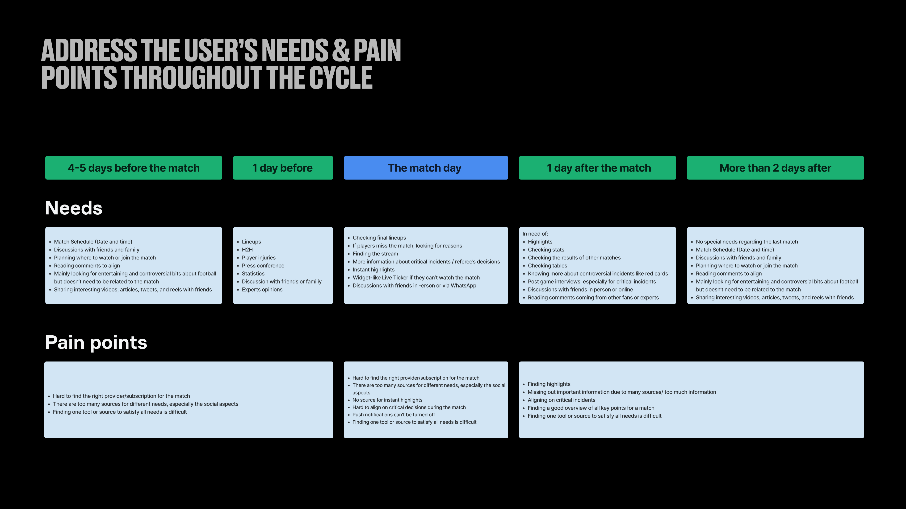
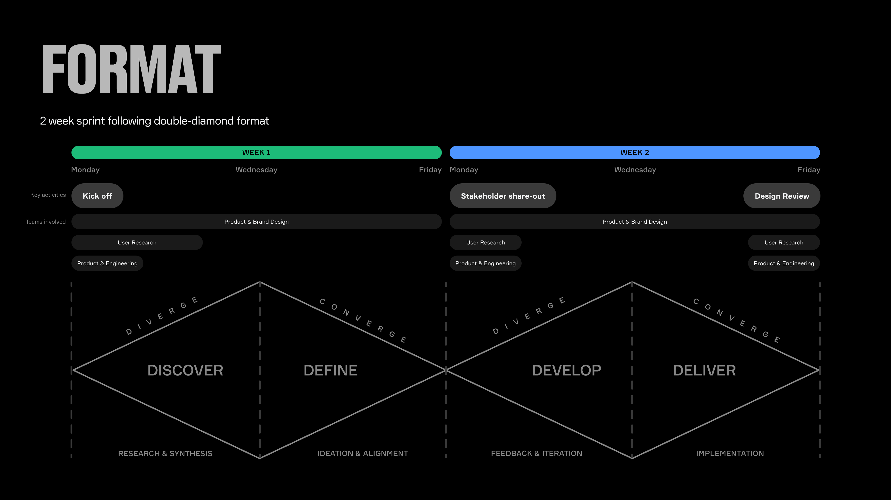
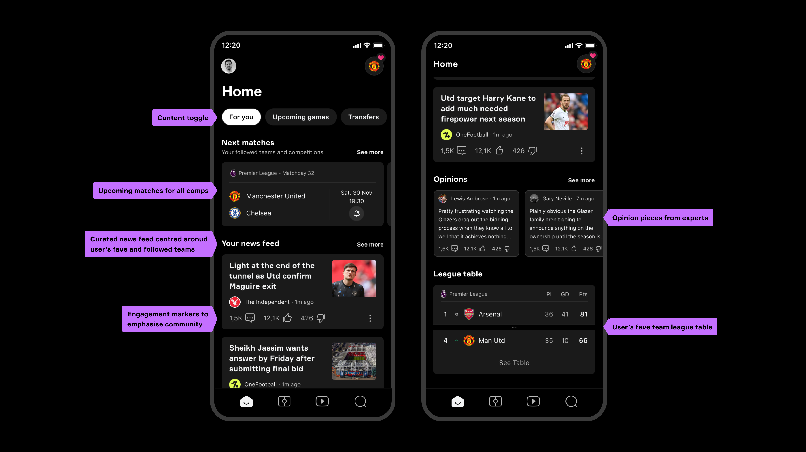
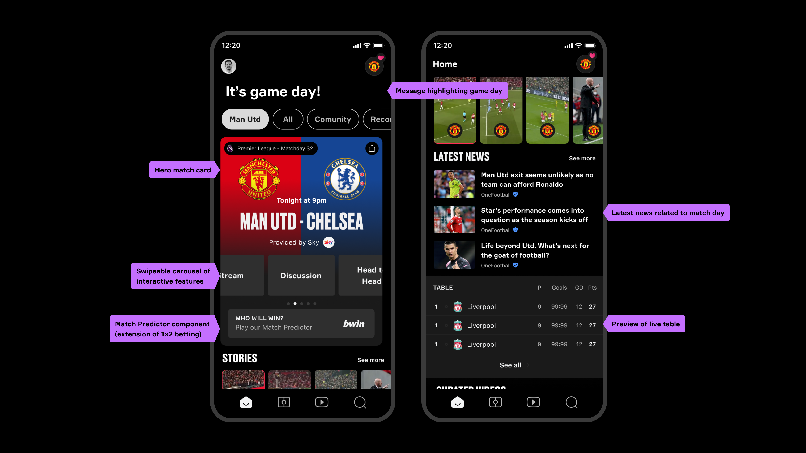
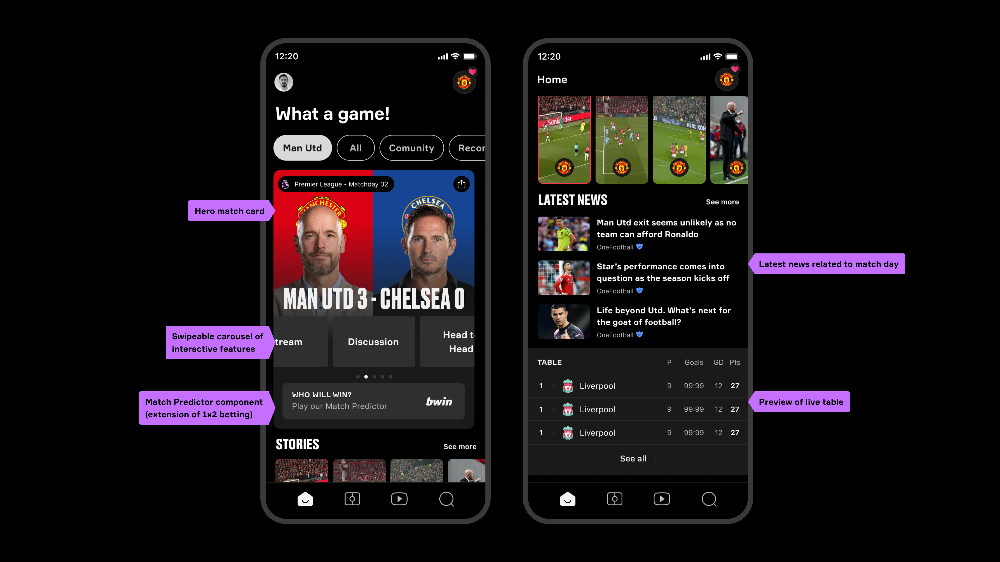

Onefootball • Senior Product Designer — Monetisation
Onefootball and designing for the rhythm of a fan

TLDR (But you should)
Onefootball was a global football app with 20 million users across Brazil, Indonesia, Europe, the UK and beyond — one of the world's most widely used sports platforms at the time. As the sole designer on Onefootball's monetisation team, I was brought into a two-week company-wide design sprint to redesign the Homepage. My focus was Special Events (Euros, World Cup) and ensuring monetisation was woven into the new vision rather than bolted on. The work became a north star that took two years to ship — but it did ship.
A feature-first app for a fan whose experience is anything but feature-first.
Onefootball had 20 million users but the product was structured around features — news, scores, stats — rather than around the rhythm of being a fan. The CPO pushed the team to rethink this from the ground up: what are the real jobs to be done, and when does each one matter? A platform migration to Flutter created the opportunity to act on it.
A fan's week isn't uniform — and the app shouldn't be either.
The research team brought a key insight: a fan's relationship with their team follows a weekly rhythm. Pre-match, match day, and post-match are three completely different emotional and informational states. The redesign brief became: surface the right jobs at the right moment, rather than making fans hunt through a static feature list.

Seven designers, two weeks, one product — and brand designers who didn't ask if it could work.
The sprint brought together seven people — product designers, brand designers, and researchers. One of the biggest revelations: unconstrained by 'can it be built?', brand designers produced ideas that were visually bolder and more emotionally resonant than anything the product team would have landed on alone. My domain was Special Events and monetisation.

A time-aware product, and a tournament hub that felt like your country's.
Pre-match — anticipation.
News, predictions, previous match analysis, predicted lineups. Content surfaced around what fans are looking for before the whistle.

Match day — the pinnacle.
Live scores, match timeline, real-time updates. The pinnacle moment — everything else steps aside.

Post-match — reflection.
Highlights, analysis, post-game breakdown. The experience winds down with the content fans want after the final whistle.

Designed for a future that took two years to arrive.
The work wasn't shipped immediately — it was presented at an all-hands as a vision for where the product could head. Two years later, components and experiences from that sprint are visible in the live product. Not many companies invest in a vision that far ahead. Seeing it emerge is its own kind of success.
Bring brand designers in early — they'll go somewhere you won't.
Product designers can get anchored in what already exists. Brand designers, unconstrained by feasibility, produced some of the most visually striking and emotionally resonant ideas in the sprint. Create the conditions for that kind of thinking earlier, not as a final polish pass.